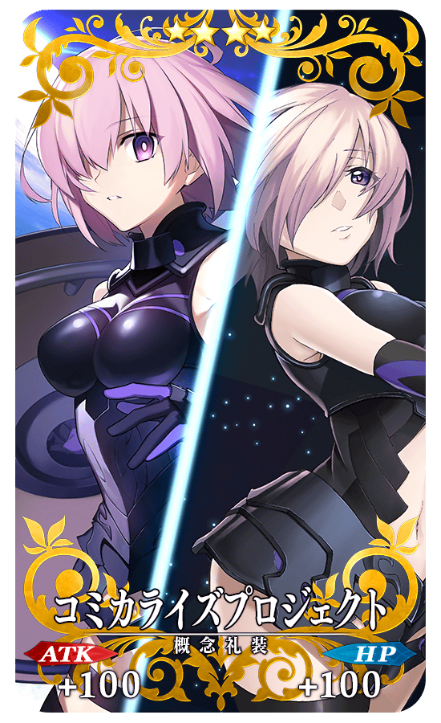
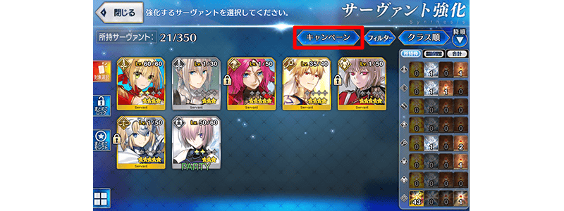

為了記念在2018年1月9日(二)出版的漫畫「Fate/Grand Order -mortalis:stella-」、「Fate/Grand Order -turas réalta-」第一卷同時發售，舉辦「-mortalis:stella-」／「-turas réalta-」漫畫發售記念宣傳活動！
◆舉辦期間◆
2018年1月8日(一) 17:00～1月22日(一) 11:59
Fate/Grand Order -mortalis:stella-
官方網站:http://www.ichijinsha.co.jp/special/fgo/
Fate/Grand Order -turas réalta-
官方網站:http://www.shonenmagazine.com/special/fgocomic/
在下述的期間中登入的話，做為記念漫畫發售贈送「聖晶石」1個與「禁斷之頁」1個！
|
◆舉辦期間◆ ◆贈送對象◆ |
在迦勒底之門，通過下述的期間中出現的「FGO Comicalize Project」漫畫發售記念關卡，得到關卡限定的概念禮裝吧！
※請注意在「FGO Comicalize Project」漫畫發售記念關卡並無冒險部份。
◆舉辦期間◆
2018年1月8日(一) 17:00～1月22日(一) 11:59
◆關卡開放條件◆
通過「特異點F 炎上汙染都市 冬木」的Master對象
◆漫畫發售記念關卡限定概念禮裝◆
|  |
★★★★SR |
對在漫畫「Fate/Grand Order -mortalis:stella-」及「Fate/Grand Order -turas réalta-」登場的Servant對象，在進行Servant時的大成功(經驗值2倍加成)・極大成功(經驗值3倍加成)發生機率以期間限定變成2倍。
藉此機會強化對象Servant吧！
◆舉辦期間◆
2018年1月8日(一) 17:00～1月22日(一) 11:59
◆對象Servant◆
| 職階 | 稀有度 | Servant名 | 登場作品 |
|---|---|---|---|
| Saber | ★★★★ | 尼祿・克勞狄烏斯 | -mortalis:stella- |
| ★★★ | 貝德維爾 | -mortalis:stella- | |
| Rider | ★★★★★ | 弗朗西斯・德雷克 | -turas réalta- |
| Caster | ★★★★ | 吉爾伽美什 | -turas réalta- |
| Assassin | ★★★ | 亨利・傑基爾＆海德 | -mortalis:stella- |
| Berserker | ★★★★★ | 南丁格爾 | -turas réalta- |
| Ruler | ★★★★★ | 貞德 | -mortalis:stella- |
| Avenger | ★★★★★ | 貞德〔Alter〕 | -turas réalta- |
| Shielder | ★★★ | 瑪琇・基利艾拉特 | -mortalis:stella-／-turas réalta- |
※12月31日(日) 23:00～1月10日(三) 11:59舉辦中的「2018年新宣傳活動」內「Servant強化＆概念禮裝強化的大成功・極大成功率以期間限定2倍!」結束後，只限上述對象Servant期間延長。
◆在篩選功能追加「宣傳活動」篩選器◆
在Servant選擇畫面和Servant強化畫面等，追加「宣傳活動」篩選器。
是只限特定的Servant，顯示在大成功＆極大成功率提升情況對象Servant的便利功能，敬請活用。

※Servant強化畫面中，在選擇強化Servant時，篩選器功能的「宣傳活動」按鍵，確認到會有未正常顯示情況的問題。
以期間限定，對在漫畫「Fate/Grand Order -mortalis:stella-」及「Fate/Grand Order -turas réalta-」登場的Servant對象，幕間物語的AP消耗量變成1/2。
※請注意強化關卡及曜日關卡為對象外。
◆舉辦期間◆
2018年1月8日(一) 17:00～1月22日(一) 11:59
◆對象Servant◆
| 職階 | 稀有度 | Servant名 | 登場作品 |
|---|---|---|---|
| Saber | ★★★★ | 尼祿・克勞狄烏斯 | -mortalis:stella- |
| ★★★ | 貝德維爾 | -mortalis:stella- | |
| Rider | ★★★★★ | 弗朗西斯・德雷克 | -turas réalta- |
| Caster | ★★★★ | 吉爾伽美什 | -turas réalta- |
| Assassin | ★★★ | 亨利・傑基爾＆海德 | -mortalis:stella- |
| Berserker | ★★★★★ | 南丁格爾 | -turas réalta- |
| Ruler | ★★★★★ | 貞德 | -mortalis:stella- |
| Avenger | ★★★★★ | 貞德〔Alter〕 | -turas réalta- |